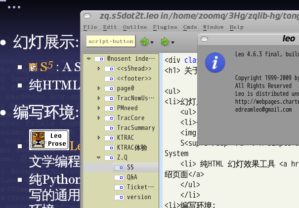

免责聲明
山寨的，非业界公认的，个人体验为基础!
参考所有同好行为总结而得
- 一切资料来自网络互动挖掘
- 一切想法来自日常学习工作
- 一切体悟来自各种沟通交流
- 一切知识来自社区分享印证
- 一切经验来自个人失败体验
......
概述::
现状/体验/建议
- +10' TOT
- +10' DOP
- +10' 现场交流
class="incremental"...
有关讲演
只有真诚才能打动人
TOT
Truly Oriented Talking
...
有关架构/编程
只有面向数据才能长久
DOP
Data
Oriented
Programming
...
关于...
- 幻灯展示:
-
 S5 : A Simple Standards-Based Slide Show System
S5 : A Simple Standards-Based Slide Show System
- 纯HTML 幻灯效果工具 本地介绍页面
- 编写环境:

-
 Leo :
Leo :
文学编程环境
- 纯Python 编写的通用编辑环境
山寨的，非业界公认的，个人体验为基础!
Q&A
...